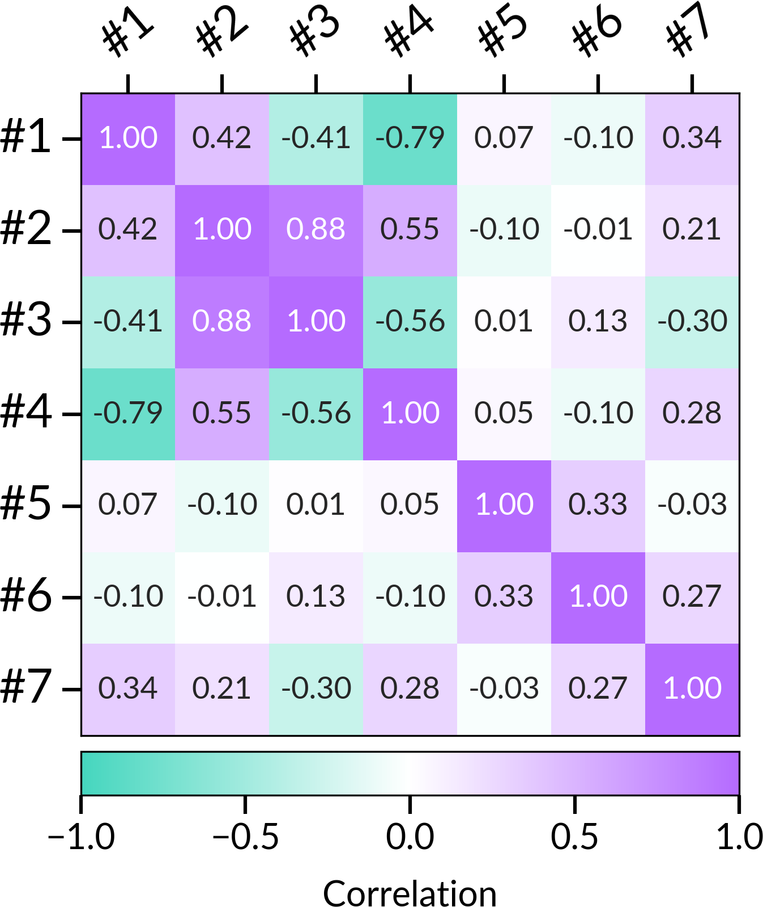
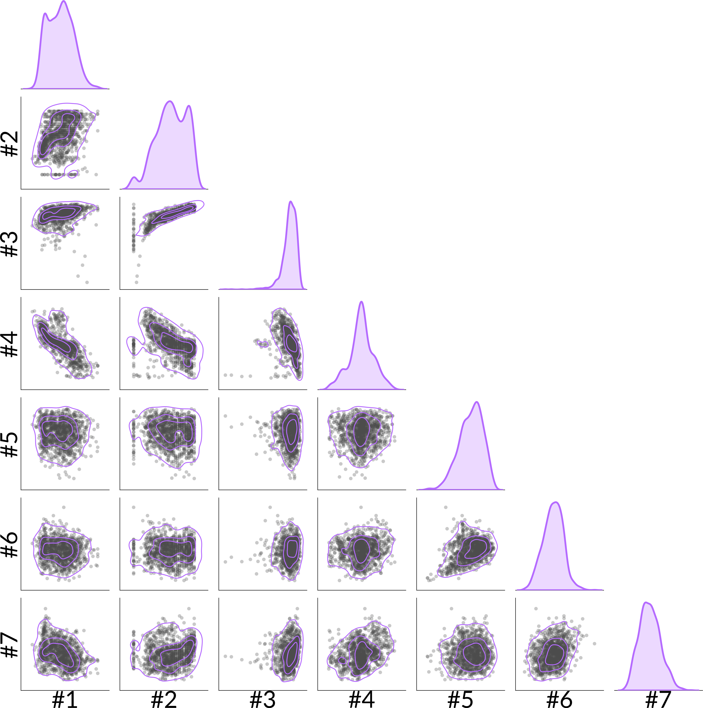
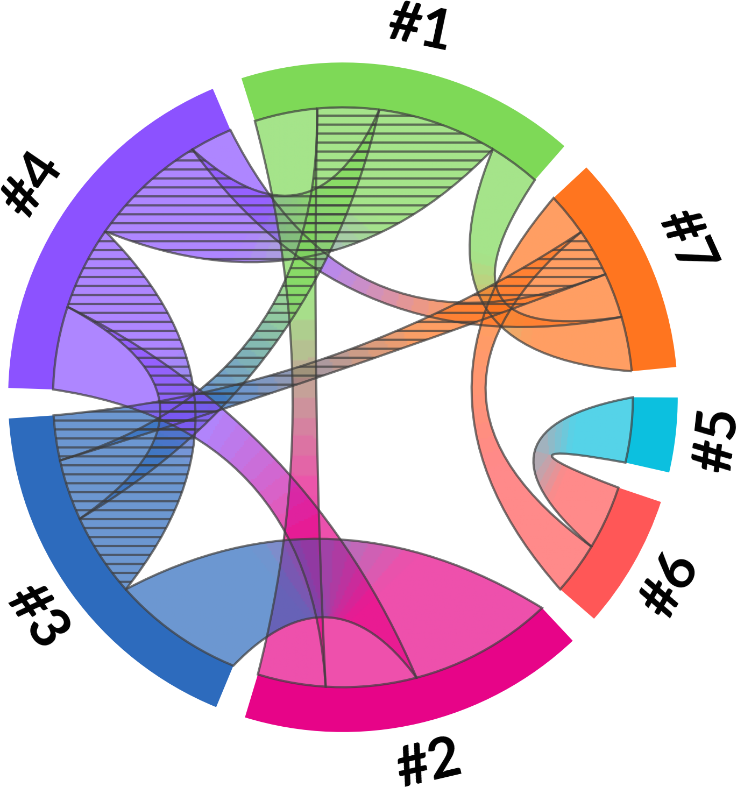

While working on our astrophysics research, we wanted to use chord diagrams to visualize correlations between several physical parameters. However, we struggled to find a Python implementation that offered the level of customization we were used to with tools like matplotlib.
There were several options available, but each came with its own limitations. Some were designed primarily for interactive visualization, while others offered less control over the appearance and layout of the diagram. We wanted something that could fit naturally into our existing Python workflow, while still giving us precise control over how the final figure looked.
So, we decided to build our own. That project eventually became Cachai.
Today, we are releasing the first version of Cachai, featuring the very visualization that started it all: the Chord Diagrams.
Want to see how it works? Check out the examples section of our documentation for a few practical examples of what you can do with Cachai.
A chord diagram represents relationships between multiple variables arranged around a circle. Each variable is shown as a node, while connections between them are represented by chords. In Cachai, these chords can encode correlations, with their thickness representing the strength of the relationship and their appearance distinguishing positive and negative correlations.
This provides a compact way of looking at many relationships simultaneously, making it useful for exploring complex datasets in astronomy and beyond.
The module was designed with customization in mind. Users can control the layout, colors, labels, chord properties, filtering thresholds, and several other aspects of the visualization, making it possible to adapt the diagram to different datasets and presentation styles.
Chord diagrams are not meant to replace familiar tools such as heatmaps or corner plots. Each visualization has its own strengths.
To illustrate this, we show the same correlation dataset using a heatmap, a corner plot, and a Cachai chord diagram:



One of the advantages of chord diagrams is their ability to summarize many relationships in a compact figure, potentially avoiding increasingly large collections of panels as the number of variables grows. They also offer a different and, in some cases, more intuitive perspective on the overall structure of the data.
We do not see chord diagrams as better than other visualization methods, but rather as another tool researchers can choose from, depending on what they want to communicate.
The Chord Diagram module is where Cachai started, but it will not end there. We plan to expand the package with new and unconventional visualization ideas, always with the goal of making complex scientific data easier to explore and communicate.
This is only our first release, and we are excited to see where Cachai goes next.